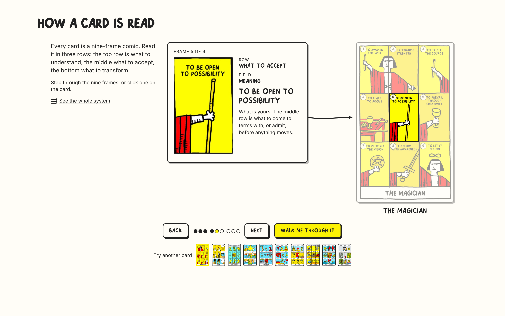
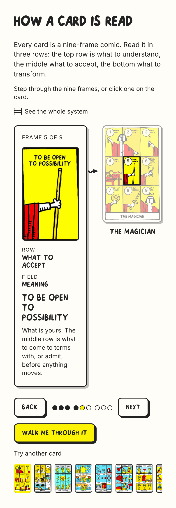
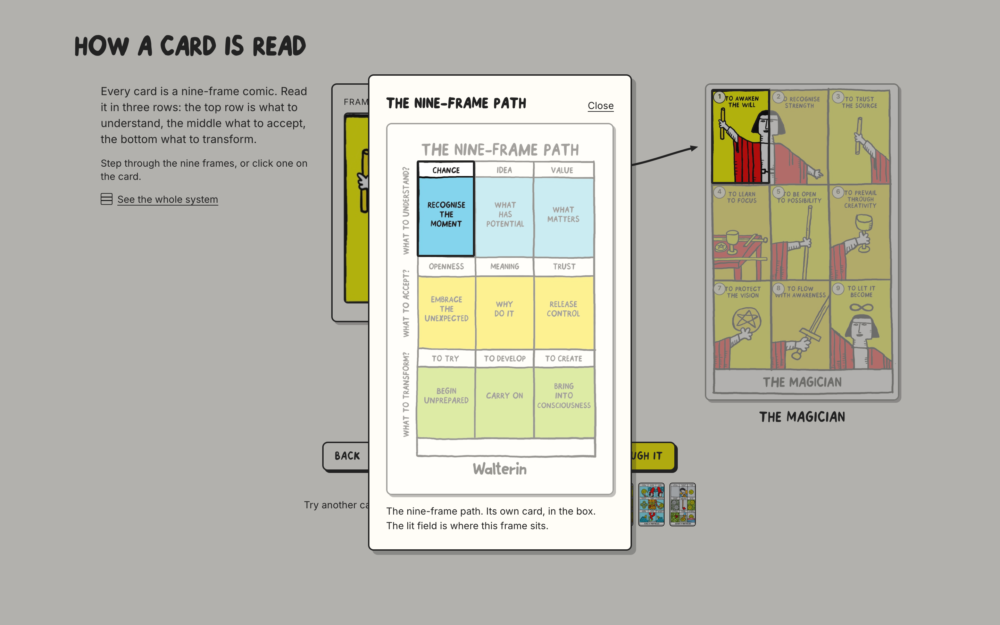
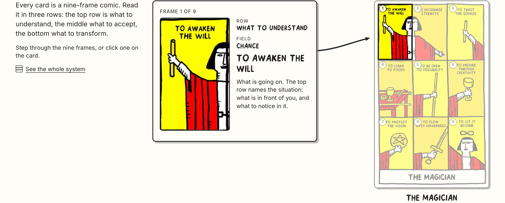
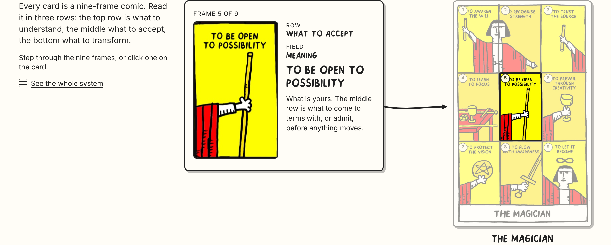
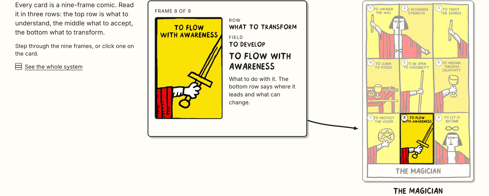
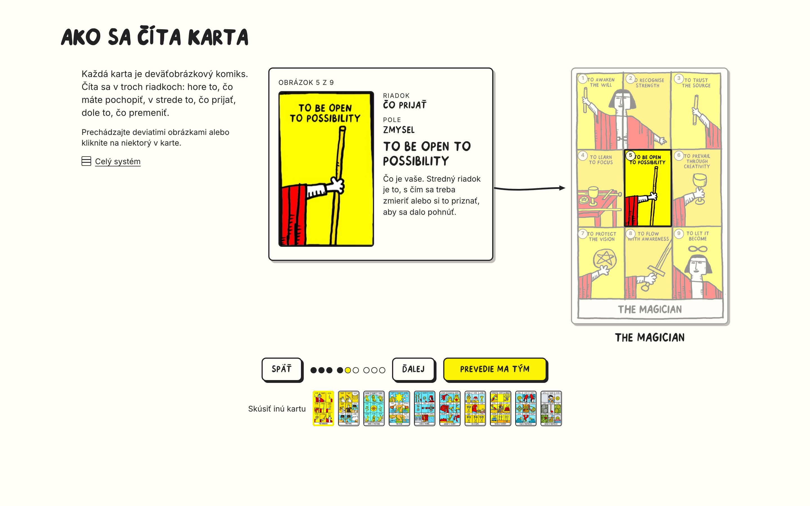
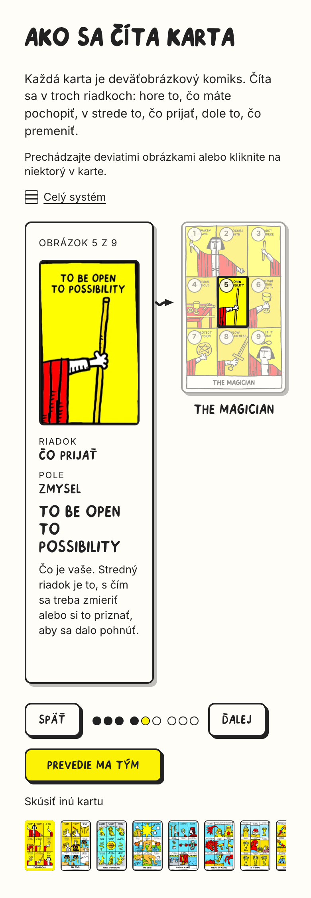

Six changes. The note and the card are the whole main view; the system card is one quiet link away; the two readings are out; the walk goes frame by frame with the time left showing in the dots; the layout uses the width so the section fits one screen; and the arrow is one clean line that never touches the card.


Every one of the nine has its own name, so the note gives both coordinates: ROW — what to understand, and FIELD — idea. Slovak: RIADOK / POLE.
| Slot | Slovensky | English |
|---|---|---|
| labels | Riadok · Pole | Row · Field |
| rows | Čo pochopiť · Čo prijať · Čo premeniť | What to understand · What to accept · What to transform |
| fields, row 1 | Náhoda · Nápad · Hodnota (pending Walter) | Chance · Idea · Value (as printed) |
| fields, row 2 | Otvorenosť · Zmysel · Dôvera (pending Walter) | Openness · Meaning · Trust (as printed) |
| fields, row 3 | Skúsiť · Rozvíjať · Tvoriť (pending Walter) | To try · To develop · To create (as printed) |
| the system link | Celý systém | See the whole system |
| the walk | Prevedie ma tým · Zastaviť | Walk me through it · Stop |
| the two readings | removed from this section — they are about using the deck, not about reading a card | |
The Slovak field words are mine, not Walter's — his are printed on the card in English, and the card stays English. In use until he signs them off.
Out of the main view, behind "See the whole system" in the intro column. It opens as a dialog with the field for the frame you are on already lit, closes on Escape or Close, and holds the walk while it is open — then lets it carry on from where it was. The main view is the note and the card, and nothing else.

The dot for the frame you are on fills with yellow from the bottom as its time runs out, so the change is never a
surprise; frames behind you are solid ink, frames ahead are empty. Per-frame timing from the research: 11s on the frame that
opens a row (it brings the row's explanation with it) and 5s on the two that follow — 12.5s and 5.5s in Slovak — plus a 0.8s
beat where the row turns. Whole run: 64.6s English, about 72s Slovak. It never starts on its own, it carries on from the
frame you are looking at, and one press or one click anywhere takes it back. Numbers, sources and every rule in
docs/design/AUTOPLAY-WALK.md.
| hover | nothing — hover-pausing is what stalled S3 |
| click | any click that moves you stops it and leaves you there |
| keyboard | focus entering the section stops it; Escape stops it |
| scrolled away · hidden tab · dialog open | holds, then carries on from where it was |
| at the end | stops on frame 9. No loop. |
| reduced motion · screen reader | the dot is filled rather than filling; each stop announces row, field and caption |
Same frame as the rest of the page — 92% wide, max 1400, the same 15/50px edges and the same spacing steps. Three columns: the text that explains the system, the note, and the card. The section is 808px tall at 1440 × 900, so it sits inside one screen with about 90px to spare, and the page does not scroll at all. At 390 it is one comfortable scroll of 1123px, with the card and its note side by side at the top.
| 1440 | 390 | |
|---|---|---|
| columns | intro 300 · note 400 · gutter 74 · card 280 | note · gutter 34 · card 132 |
| section height | 808px — fits 900 | 1123px — one scroll |
| note | the frame on the left, what it is on the right | stacked |
One line of even weight with a small solid head. It leaves the note beside the row it points at and follows a single gentle curve; the last part of the curve lies on the straight line running into the centre of that frame, so the head points exactly at it. It stops 10px short of the card at every frame and both widths — measured on all nine, in both languages. No wobble, no improvised shapes: the only thing that changes between frames is where it is aimed.



| 1440 × 900 | 390 × 844 | |
|---|---|---|
| Page height | 900px — no scroll | 1123px |
| Arrow clearance from the card | 10px on all nine frames | 10px on all nine frames |
| Layout shift over a whole nine-frame walk | 0.0000 | 0.0000 |
| Palette — ink, paper, yellow only | pass | pass |
| Nothing past the content edge · no horizontal scroll | pass | pass |
| Keyboard: arrows step, Tab reaches the link and the frames | pass | pass |
| Dialog: holds the walk, Escape closes, the walk carries on | pass | pass |
| Reduced motion · Chromium + WebKit · EN + SK · no console errors | pass | pass |
The Slovak version, for the record:

